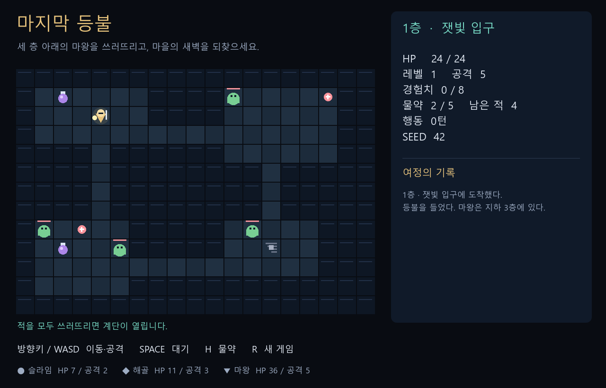
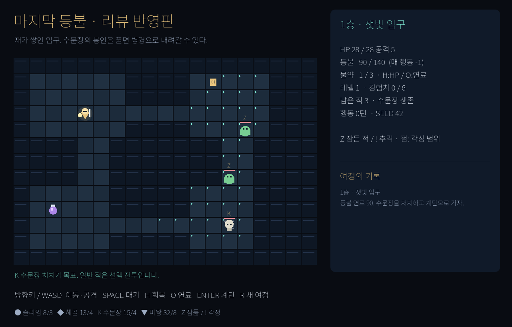

기다리기만 해도 되나?
시스템 F2대기는 무료.
등불은 장식.
매 행동 연료 −1.
등불이 꺼지면 패배.
마지막 등불 / 리뷰 전후 비교
같은 작은 용사 로그라이크, 두 가지 구현.
원문 지적에서 바뀐 규칙까지 확인하고 직접 플레이하세요.
반영 수는 구현·문서 대응 항목 수입니다. 새 독립 리뷰의 해결 판정이나 사람의 재미·승률 검증 결과가 아닙니다.
두 게임 비교 플레이대기는 무료.
등불은 장식.
매 행동 연료 −1.
등불이 꺼지면 패배.
물약은 HP 회복 한 용도.
레벨업·층 이동도 회복.
같은 물약을 H: HP +10
또는 O: 연료 +20에 배분.
일반 적까지 전멸해야
다음 층으로 이동.
수문장만 처치하면 개방.
더 싸울지, 내려갈지 선택.
일반 추격·근접 공격.
마왕 뒤에도 남은 적 처치.
왕좌 고정·불길 예고·회피.
마왕 처치 즉시 새벽 결말.
벽 너머 거리로 각성.
잠듦·각성 상태 미표시.
안전한 시작 배치·경로 거리.
Z / !와 바닥 점으로 예측.
GDD의 공백을 구현자가 결정.
디자인 수용 기준 미정의.
개정 GDD·반영표·내장 검증.
자동 측정과 사람 관찰 구분.
원본 구현에도 결말, 3층 계단 없음, 확인창 입력 차단이 있습니다. GDD의 누락을 메운 항목과 실제 게임 규칙이 바뀐 항목을 전체 반영표에서 구분했습니다.
같은 seed로 두 게임을 재현할 수 있습니다. 생성 규칙이 달라 지형이 같지는 않습니다. 게임을 클릭하면 그쪽에 키 입력이 전달됩니다.

방향키 / WASD 이동·공격 · Space 대기 · H 물약 · R 새 여정

같은 조작 + O 물약을 연료로 · 열린 계단 위 Enter · X 불길 회피
게임 시작 화면에서 Enter를 누르세요. 글자가 작으면 “크게 플레이”를 사용하세요. 데스크톱 키보드와 WebGL 2 지원 브라우저가 필요합니다.
반영 내역을 불러오는 중입니다.
기존 리뷰·GDD·게임 소스는 보존했습니다. 개선본은 300개 층 생성과 게임 상태 검사를 수행했고, 정해진 두 자동 정책을 각각 20 seed에서 측정했습니다. 사람의 첫 판 승률·5~10분 체험 시간·재미는 아직 확인하지 않았습니다.